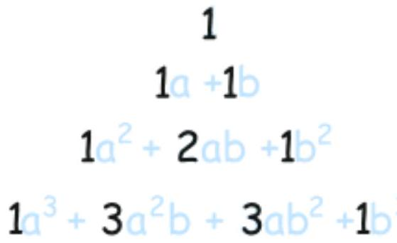
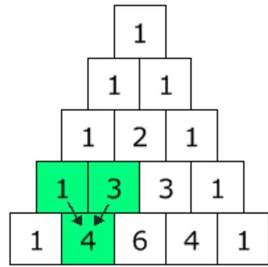
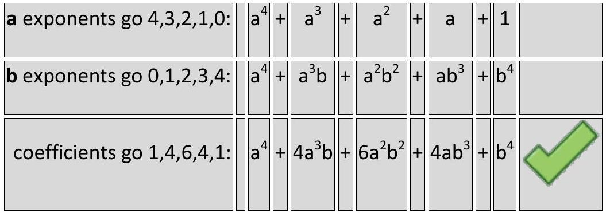
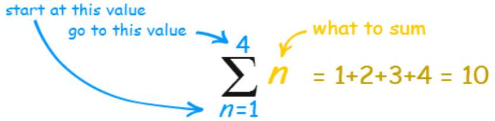
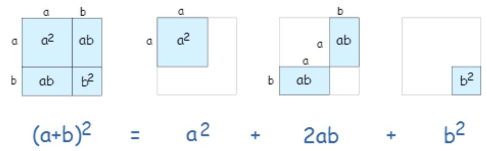
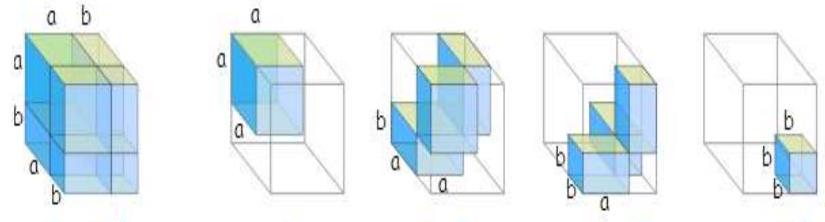
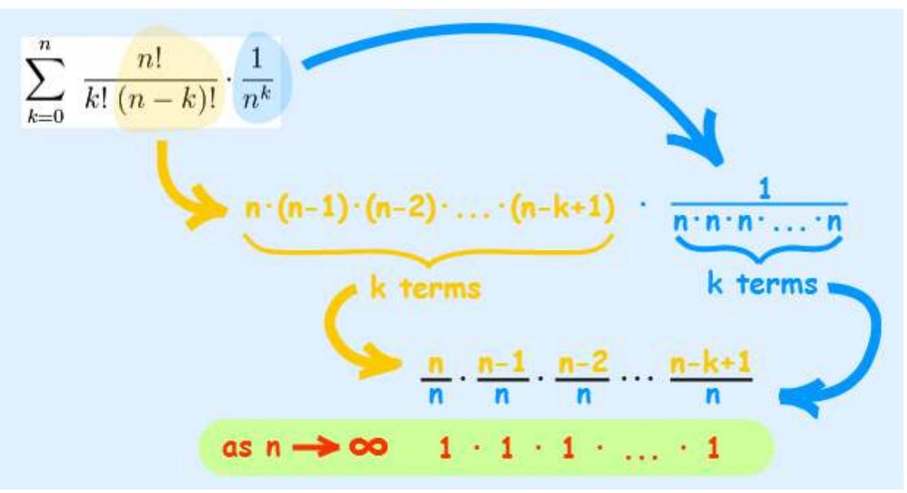

CHAPTER 4: DISCRETE COUNTING (Continued)
Coefficients (Binomial Theorem)
We are missing the numbers (which are called coefficients).
Let's look at all the results we got before, from $(a+b)^{0}$ up to $(a+b)^{3}$ :
And now look at just the coefficients (with a "1" where a coefficient wasn't shown):
They actually make Pascal's Triangle!
Each number is just the two numbers above it added together (except for the edges, which are all "1")
(Here I have highlighted that $\mathbf{1 + 3}=\mathbf{4}$ )
Armed with this information let us try something new ... an exponent of 4:
And that is the correct answer (compare to the top of the page).
We have success!
We can now use that pattern for exponents of $5,6,7, \ldots 50, \ldots 112, \ldots$ you name it!
That pattern is the essence of the Binomial Theorem.
Now you can take a break.
When you come back see if you can work out $(\mathbf{a}+\mathbf{b})^{5}$ yourself.
Answer (hover over): $a^{5}+5 a^{4} b+10 a^{3} b^{2}+10 a^{2} b^{3}+5 a b^{4}+b^{5}$
Formula (Binomial Theorem)
Our last step is to write it all as a formula.
But hang on, how do we write a formula for "find the coefficient from Pascal's Triangle" ... ?
Well, there is such a formula:
It is commonly called " n choose k " because it is how many ways to choose k elements from a set of n.
The "!" means "factorial", for example $4!=4 \times 3 \times 2 \times 1=24$
And it matches to Pascal's Triangle like this:
(n=0) (0 0)
(n=1) (1 0) (1 1)
(n=2) (2 0) (2 1) (2 2)
(n=3) (3 0) (3 1) (3 2) (3 3)
(n=4)(4 0) (4 1) (4 2) (4 3) (4 4)(Note how the top row is row zero and also the leftmost column is zero!)
Example: Row 4, term 2 in Pascal's Triangle is "6".
Let's see if the formula works:
Yes, it works! Try another value for yourself.
Putting It All Together
The last step is to put all the terms together into one formula.
But we are adding lots of terms together ... can that be done using one formula?
Yes! The handy Sigma Notation allows us to sum up as many terms as we want:
Sigma Notation
Now it can all go into one formula:
The Binomial Theorem
Use It
OK ... it won't make much sense without an example.
So let's try using it for $n=3$ :
BUT ... it is usually much easier just to remember the patterns:
- The first term's exponents start at $\mathbf{n}$ and go down
- The second term's exponents start at $\mathbf{0}$ and go up
- Coefficients are from Pascal's Triangle, or by calculation using $n!/(k!(n-k)!)$
Like this:
Example: What is $(y+5)^{4}$
| Start with exponents: | $y^{4} 5^{0}$ | $y^{3} 5^{1}$ | $y^{2} 5^{2}$ | $y^{1} 5^{3}$ | $y^{0} 5^{4}$ |
| Include Coefficients: | $\mathbf{1y} \mathbf{y}^{4} 5^{0}$ | $\mathbf{4y} \mathbf{y}^{3} 5^{1}$ | $\mathbf{6y} \mathbf{y}^{2} 5^{2}$ | $\mathbf{4y} \mathbf{y}^{1} 5^{3}$ | $\mathbf{1y}{ }^{0} 5^{4}$ |
Then write down the answer (including all calculations, such as $4 \times 5, 6 \times 5^{2}$, etc):
We may also want to calculate just one term:
Example: What is the coefficient for $x^{3}$ in $(2 x+4)^{8}$
The general term is $\binom{n}{k} a^{n-k} b^{k}$
Here $n=8, a=2x, b=4$. We want the term where the power of $x$ is 3. This means $(2x)^{n-k}$ must have $x^3$, so $n-k=3$.
Since $n=8$, we have $8-k=3$, which means $k=5$.
The term is $\binom{8}{5} (2x)^{8-5} (4)^{5}$
The coefficient is $\binom{8}{5}$. We can use Pascal's Triangle, or calculate directly:
And we get:
Which simplifies to:
$56 \times (8x^3) \times 1024 = 56 \times 8 \times 1024 \times x^3 = 458752 x^{3}$
A large coefficient, isn't it?
Geometry (Binomial Theorem)
Want to see the Binomial Theorem using Geometry?
In 2 dimensions, $(\mathbf{a}+\mathbf{b})^{\mathbf{2}}=\mathbf{a}^{\mathbf{2}}+\mathbf{2 a b}+\mathbf{b}^{\mathbf{2}}$
In 3 dimensions, $(\mathbf{a}+\mathbf{b})^{\mathbf{3}}=\mathbf{a}^{\mathbf{3}}+\mathbf{3} \mathbf{a}^{\mathbf{2}} \mathbf{b}+\mathbf{3} \mathbf{a b}^{\mathbf{2}}+\mathbf{b}^{\mathbf{3}}$
In 4 dimensions, $(\mathbf{a}+\mathbf{b})^{4}=\mathbf{a}^{\mathbf{4}}+\mathbf{4} \mathbf{a}^{\mathbf{3}} \mathbf{b}+\mathbf{6a}^{\mathbf{2}} \mathbf{b}^{\mathbf{2}}+\mathbf{4 a b} \mathbf{b}^{\mathbf{3}}+\mathbf{b}^{4}$
(Sorry, I am not good at drawing in 4 dimensions!)
Advanced Example (Binomial Theorem)
And one last, most amazing example:
Example: A formula for e (Euler's Number)
We can use the Binomial Theorem to calculate e (Euler's number).
$\mathrm{e}=\mathbf{2 . 7 1 8 2 8 1 8 2 8 4 5 9 0 4 5} \ldots$ (the digits go on forever without repeating)
It can be calculated using:
(It gets more accurate the higher the value of $\mathbf{n}$ )
That formula is a binomial, right? So let's use the Binomial Theorem:
First, we can drop $1^{\mathrm{n}-\mathrm{k}}$ as it is always equal to 1 :
And, quite magically, most of what is left goes to $\mathbf{1}$ as n goes to infinity:
Which just leaves:
With just those first few terms we get $\mathrm{e} \approx 2.7083$...
Try calculating more terms for a better approximation!